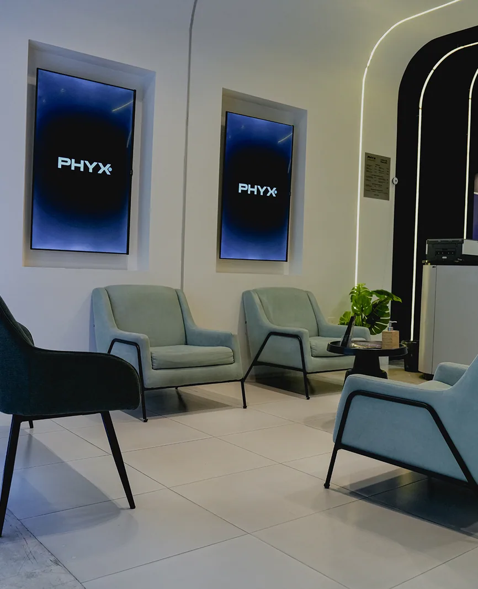
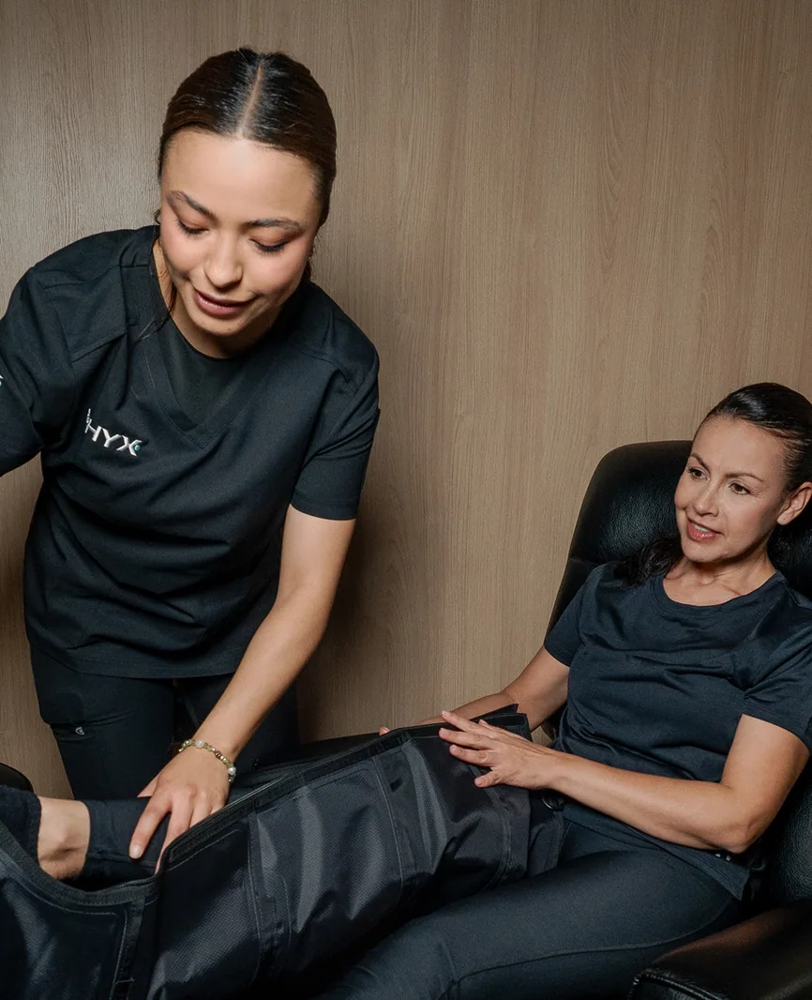
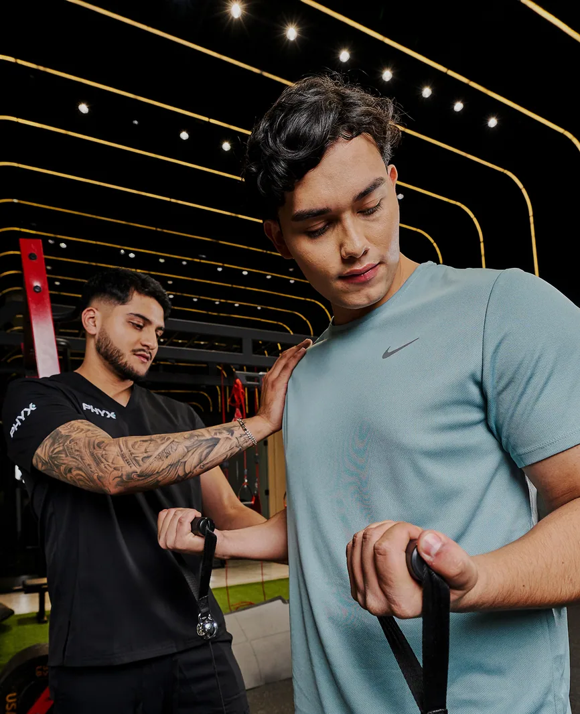
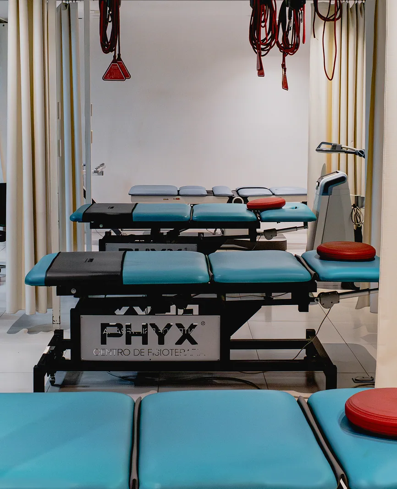
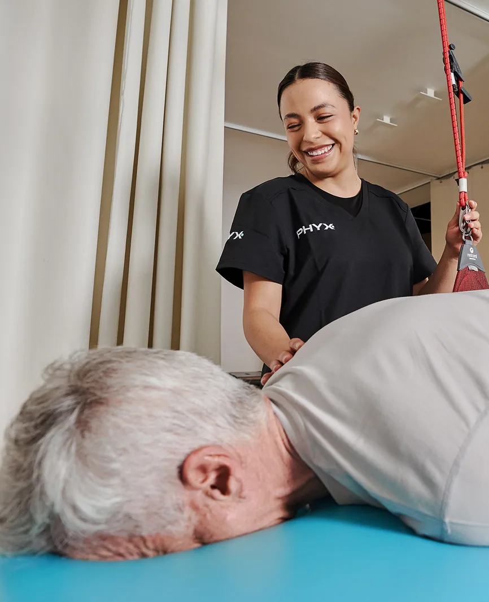
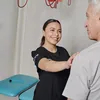

Lindavista
Lindavista Las Américas
Las Américas Ecatepec
Ecatepec Cámaras hiperbáricas
Cámaras hiperbáricas Comparar planes
Comparar planes Preguntas frecuentes
Preguntas frecuentes
Mantén presionadoEmpieza con tu valoración
Antes de cualquier sesión, tu fisioterapeuta revisa tu historia, tus objetivos y si la cámara es adecuada para ti
Sesiones de 60 minutos dentro de una cámara presurizada, como parte de tu plan de rehabilitación o recuperación en Las Américas y Lindavista
Agenda tu valoraciónQUÉ ES
La sesión se realiza dentro de una cámara presurizada que permite que el oxígeno adicional se disuelva en el plasma sanguíneo. Tu fisioterapeuta decide si tiene sentido en tu caso

Mantén presionadoAntes de cualquier sesión, tu fisioterapeuta revisa tu historia, tus objetivos y si la cámara es adecuada para ti


Entras a la cámara, se presuriza poco a poco y descansas mientras dura la sesión. El equipo te acompaña de principio a fin

Mantén presionadoPuede combinarse con presoterapia, terapia de luz o tus sesiones de rehabilitación, según tu plan. El seguimiento suele ser de 1 a 2 meses
TESTIMONIOS
"Me explicaron cada tecnología antes de usarla y nunca me sentí un número más"
 Patricia Luna
Patricia Luna  ★★★★★Cámara hiperbárica · Las Américas
★★★★★Cámara hiperbárica · Las Américas"Entreno pesado y la Recovery Zone cambió cómo me siento al día siguiente"
 Fernanda Ríos
Fernanda Ríos  ★★★★★Recovery Zone · Las Américas
★★★★★Recovery Zone · Las Américas"Desde recepción hasta los terapeutas, todos te tratan con calma"
 Laura Castañeda
Laura Castañeda  ★★★★★Rehabilitación de hombro · Ecatepec
★★★★★Rehabilitación de hombro · Ecatepec"Entreno tres veces por semana con mi fisio"
 Jorge Ramírez ★★★★★Membresía adulto mayor · Las Américas
Jorge Ramírez ★★★★★Membresía adulto mayor · Las AméricasPARA QUIÉN
Estos son los casos en los que solemos integrarla. Cada caso requiere valoración; los resultados varían

Como apoyo a tu recuperación entre entrenamientos y en la readaptación de lesiones deportivas

Mantén presionadoComo complemento de tu rehabilitación después de una cirugía, siempre con la indicación de tu equipo


Para reducir la fatiga y acompañar su rehabilitación o su entrenamiento de Mayor Training
DÓNDE Y CUÁNTO
Paquetes de sesiones en Las Américas y Lindavista. Te confirmamos disponibilidad al agendar
Recovery Zone by Kontrast
Incluye:
Kontrast Lindavista · cámara suave
Incluye:


TESTIMONIOS
Descompresión robótica · Lindavista
Llegué con una hernia lumbar y miedo a operarme. Desde la valoración me explicaron todo con mis estudios y hoy hago mi vida normal
Paquete Ortopedia · Lindavista
No tuve que ir de consultorio en consultorio. El ortopedista y mi fisioterapeuta revisan mi avance juntos
Membresía Performance · Lindavista
Me miden fuerza y movilidad cada mes. Saber exactamente dónde estoy me motiva a seguir
Membresía adulto mayor · Lindavista
Mi fisio adapta cada ejercicio a mí. Ya camino con más confianza y salgo sola al mercado
Membresía adulto mayor · Las Américas
Entreno tres veces por semana con mi fisio. Ya subo escaleras sin agarrarme y mis hijos notan el cambio
Recovery Zone · Las Américas
Entreno pesado y la Recovery Zone cambió cómo me siento al día siguiente. El equipo te guía en cada sesión
Cámara hiperbárica · Las Américas
Me explicaron cada tecnología antes de usarla y nunca me sentí un número más. Muy recomendable
Rehabilitación de rodilla · Ecatepec
Después de mi ligamento cruzado pensé que no volvería a correr. El plan fue claro semana a semana y ya regresé a mis 5K
Rehabilitación de hombro · Ecatepec
Desde recepción hasta los terapeutas, todos te tratan con calma. Recuperé el movimiento del hombro antes de lo que esperaba
Rehabilitación de espalda · Las Américas
Me enseñaron mis estudios y el plan sesión por sesión. Saber qué estamos trabajando cambia todo
Es una sesión dentro de una cámara presurizada que permite que el oxígeno adicional se disuelva en el plasma sanguíneo. Dura alrededor de 60 minutos.
Sí. Tu fisioterapeuta revisa tu historia y tus objetivos para decidir si la cámara es adecuada para ti y cómo integrarla a tu plan.
En Las Américas, dentro de la Recovery Zone by Kontrast, y en Lindavista, en Kontrast Lindavista.
Depende de tu caso. El seguimiento suele ser de 1 a 2 meses y tu especialista te recomienda un paquete. Cada caso requiere valoración; los resultados varían.
Las Américas: 5 sesiones $2,500, 10 sesiones $4,500 y 20 sesiones $8,000. Lindavista: 3 sesiones $1,800, 5 sesiones $2,750, 10 sesiones $5,000 y 20 sesiones $9,000 (MXN).
Sí, se puede combinar con presoterapia, terapia de luz y tus sesiones de rehabilitación o Performance, según tu plan.
Agenda tu valoración y tu fisioterapeuta te dice si la cámara hiperbárica tiene sentido para ti
Agenda tu valoración